When government AI safety institutes flag a problem, do companies respond?
A source-verified dataset tracking public findings from government AI Safety Institutes (UK AISI, US CAISI and the International Network) and independent third-party evaluators (METR, SecureBio, Apollo Research and others) about frontier AI models — and whether a documented company or policy response followed.
The accountability pipeline
Where findings go — and where publicly documented follow-up is, and is not, observed. Every ribbon is an exact count from the dataset; flows draw in stage by stage as you scroll.
From 1,013 findings to the accountability gap
Table view: The accountability pipeline
Key insights
The data in charts
Hover any mark for detail. Each chart includes a table view of the plotted values.
The figure set
All 26 figures from the paper, regenerated 2026-08-17 from the merged corpus. Headline: 118 of 147 significant-risk findings (80%) drew no proportionate response.

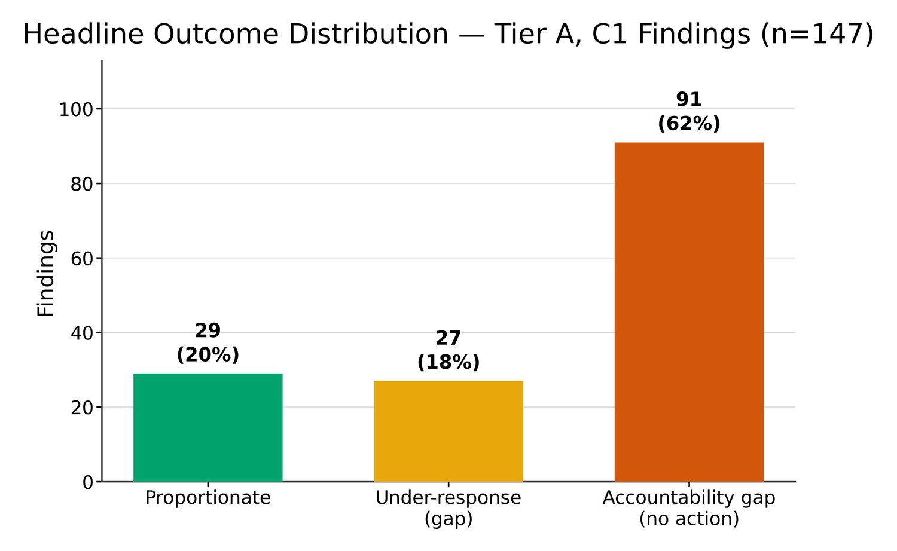

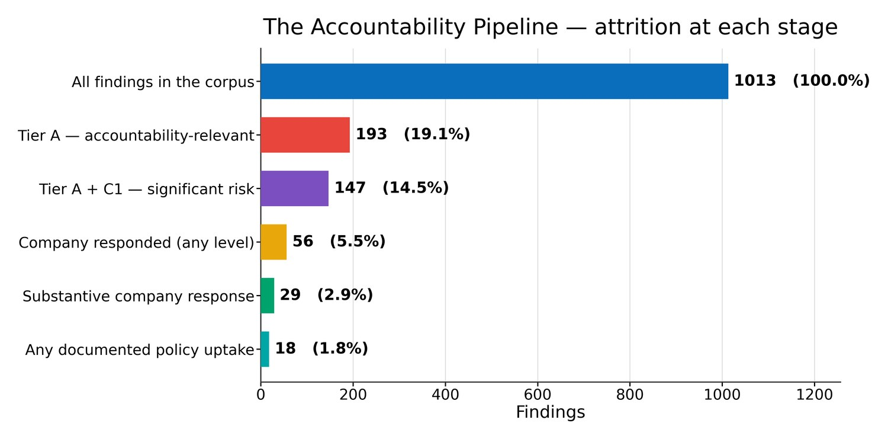


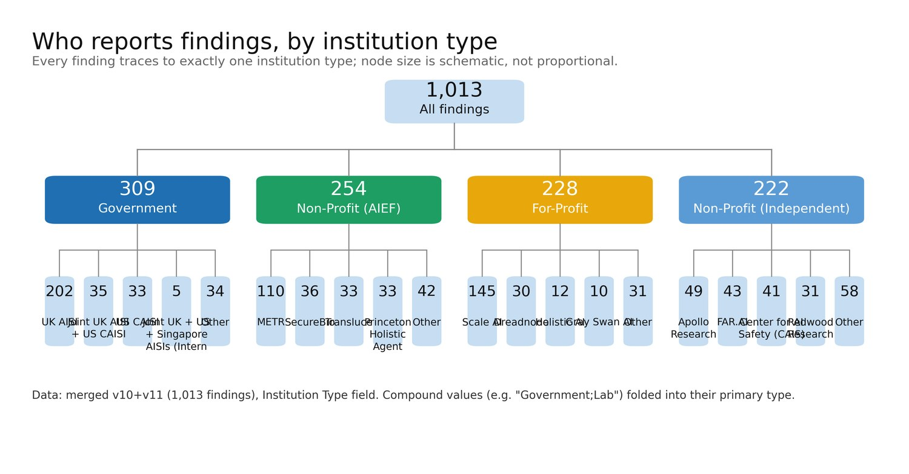
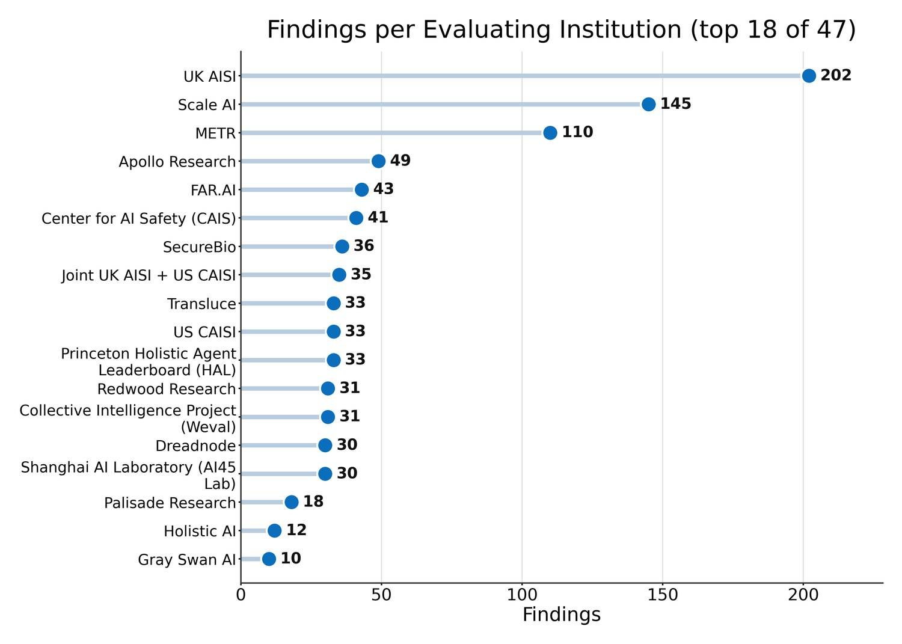

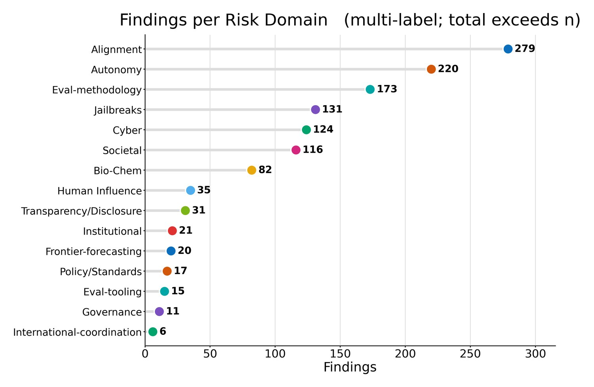
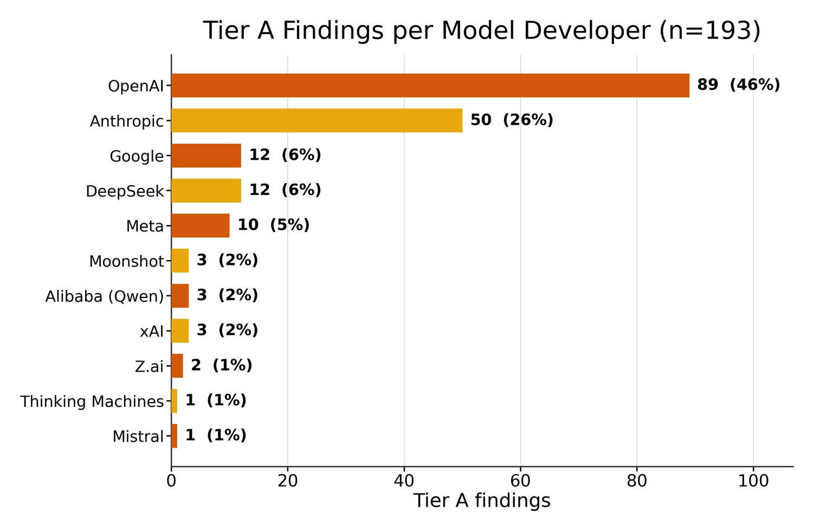

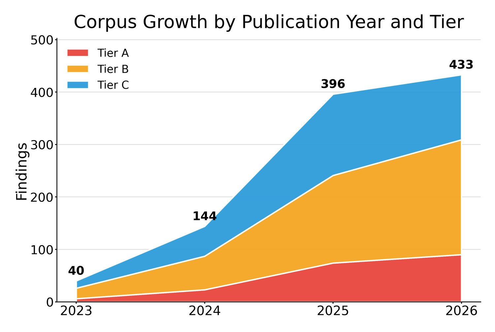
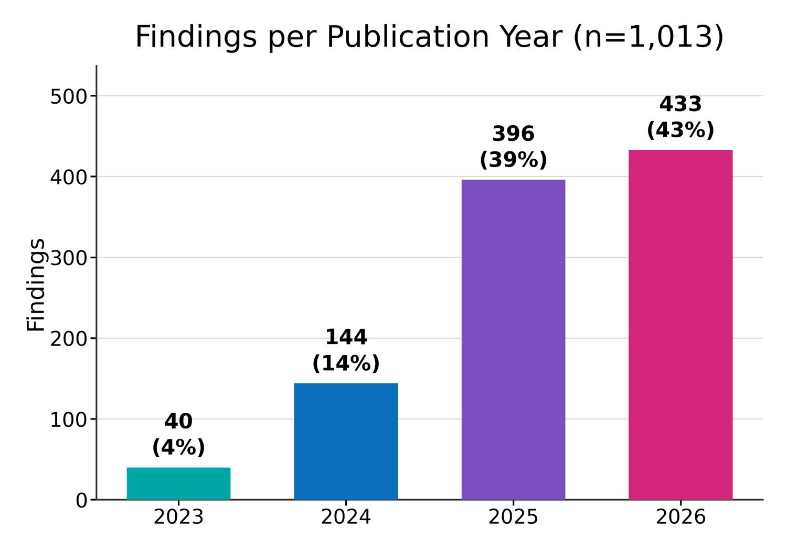
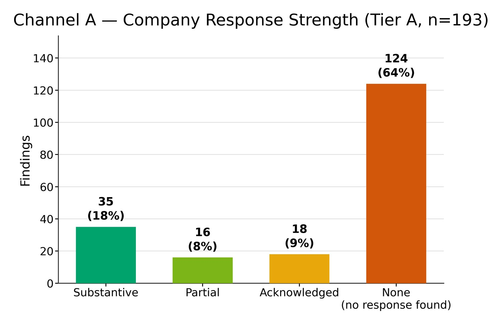

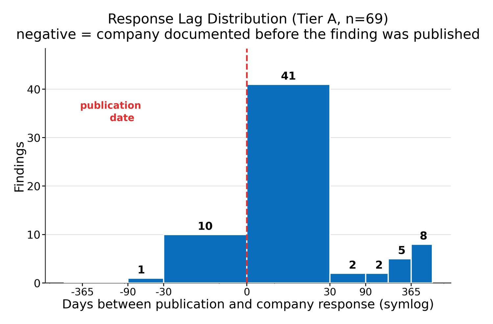
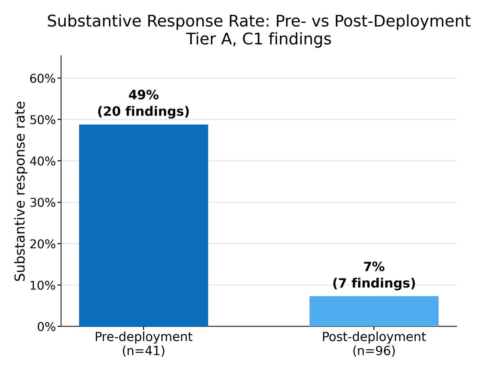

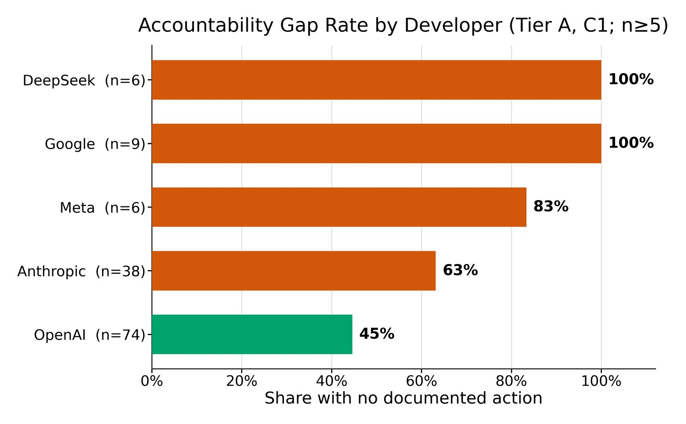


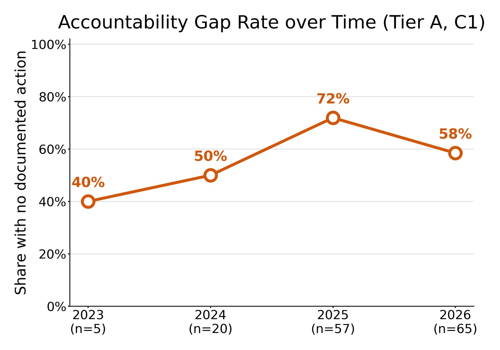
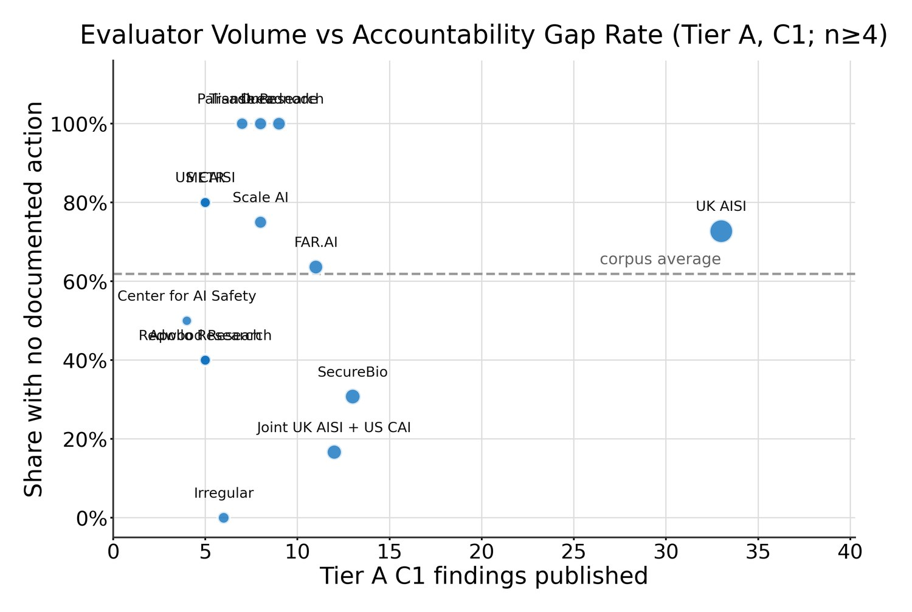
Findings explorer
Search and filter all findings. Click a row for the full finding, key quote, company response and sources.
| Date | Institution | Finding | Models | Severity | Response |
|---|
Methodology
The dataset measures the public-channel accountability pipeline: when an AI safety institute or third-party evaluator publishes a finding about a named model, does a documented company response follow? Every cell follows a strict evidentiary standard — verified-real or deliberately empty.
Scope
- Government AISI: UK AISI, US CAISI/NIST, affiliated national AISIs (Japan, Singapore, Korea, France, EU AI Office) and any joint exercise including a government AISI.
- Third-party evaluator: independent research organisations and AI Evaluator Forum members (METR, Apollo Research, SecureBio, Transluce and others) publishing without a government co-author.
- Company-published reports are included only where an external evaluator is named, and are filed under that evaluator. A company evaluating its own model with no external evaluator named is out of scope.
The accountability set
A finding enters the accountability set only if it is an empirical model finding that names a specific company or model and demonstrates a concerning result for which a company response is reasonable to expect. Reassuring-null results, marginal benchmark uplifts, inconclusive results, comparative rankings and methodology studies are tracked but excluded.
What counts as a response
Only the company's own primary document counts — blog, system card, deprecation notice, filing. News coverage quoting a company is never admitted, and pre-existing policy does not count. The action must address the identified problem: a general-purpose measure that would read identically had the finding never been published does not qualify. Whether the company credits the evaluator is recorded separately under Attribution — acting without saying why still counts as acting. Negative lags are genuine: pre-deployment evaluators share findings before publication.
Proportionality
Outcome = severity × response strength, and the bar is severity-relative: for a significant-risk finding only a substantive response is proportionate, whereas for the lower severity a partial one is. Action Level scores the content of the public response — not whether it was implemented, or whether it reduced risk.
Severity
C1: a dangerous-capability threshold is demonstrated (CBRN, cyber, autonomy, persuasion, deception, safeguard failure, eval integrity). C2: partial capability, benchmark deltas, negations. Ensemble-coded by three cross-provider model votes with unanimity recorded.